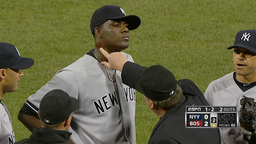
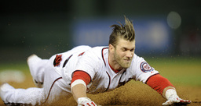
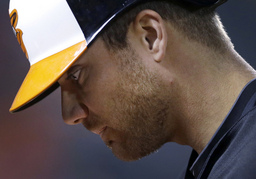

Home
Welcome to MLB Stats!
This website is reference to Baseball Player Stats using the MLB Stats Database.
Below is a list of Baseball's Top Stories. Player Information and their statistics can be found in the navigation bar on the top left corner of the site.
Top Stories
Baseball will look at pine tar rule after season
NEW YORK (AP) Baseball Commissioner Bud Selig says the sport will wait until after the season to study whether the rule preventing pitchers from using pine tar should be changed.
New York Yankees pitcher Michael Pineda was suspended for 10 games Thursday, a day after umpires found pine tar on his neck during a game against Boston. Pineda said he was trying to get a better grip on balls on a cool night, and pitchers say they suspect pine tar use may be routine - although usually discreet.
Baseball rules prohibit pitchers from using foreign substances.
National's Harper removed for possible injury

WASHINGTON (AP) Nationals left fielder Bryce Harper has been removed after four innings of Washington's game against the San Diego Padres.
After sliding in head first on his bases-loaded triple in the third, Harper could be seen flexing his left wrist. Nate McLouth replaced him to start the fifth inning. The Nationals led 6-0.
There was no immediate announcement regarding whether or not Harper had suffered an injury.
Orioles slugger Davis leaves with strained oblique
BALTIMORE (AP) Orioles first baseman Chris Davis has left Friday night's game against Kansas City with a strained left oblique.
Davis left in the fifth inning with Baltimore trailing 2-0. He appeared to hurt his side during a third-inning at-bat, but played the field in the fourth.
The severity of the injury was not immediately determined.